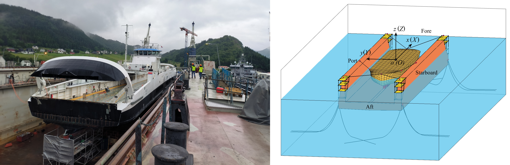

Dynamic analysis of floating docks with corrosion-induced holes at ballast tanks during operations

Abstract
Floating docks with extended service lives are increasingly exposed to ballast tank corrosion, which can trigger severe accidents and economic losses if left unaddressed. This study presents the quantitative investigation of how corrosion-induced holes affect the dynamic stability of floating docks during operations. Numerical simulations are performed to evaluate dock performance under different hole sizes during both ballasting and de-ballasting operations. Results show that the existing ballast control system remains effective during automatic ballasting, keeping pitch and roll angles within small ranges even with two 300 mm holes in separate tanks. In contrast, automatic de-ballasting is much more vulnerable: stability is maintained only with a single hole or, in limited cases, with two holes of less than 180 mm. This work reveals critical limitations of current ballast control algorithms and identifies the hidden hazards posed by ballast tank corrosion. The findings provide new insights into corrosion-related risks and offer guidance for developing more resilient control strategies to ensure the safe and reliable operation of floating docks.
Read the published article ↗